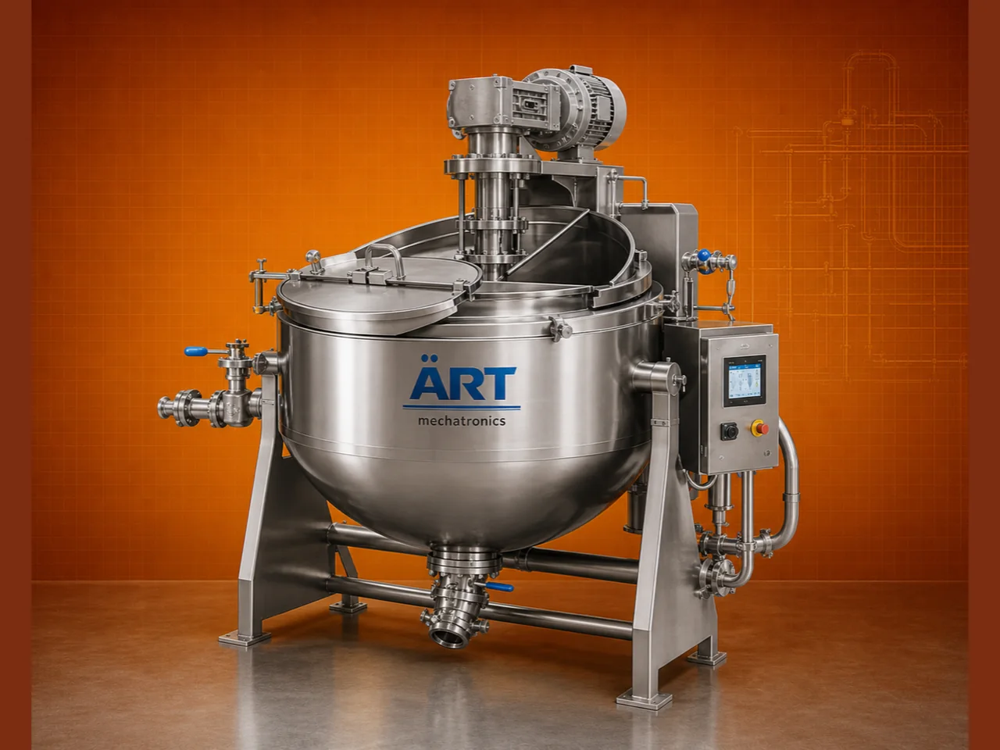

Tilting Cooking Tank / Boiling Tank (Steam Jacketed Kettle for Industrial Cooking & Heating Applications)
A Tilting Cooking Tank, also known as a Boiling Tank, Steam Jacketed Kettle, or Cooking Vessel, is a versatile industrial equipment used for boiling, cooking, heating, and mixing various liquid and semi-solid materials.

About the Cooking Kettle, Boiling Tank
These machines are widely used in industries such as food processing, dairy, pharmaceuticals, chemicals, nutraceuticals, and cosmetics, where controlled heating and uniform cooking are essential.
The system is designed with a jacketed structure, allowing steam, thermal oil, or electric heating to provide uniform heat distribution, ensuring efficient cooking, reduced processing time, and high product quality.
ART Mechatronics offers high-quality tilting cooking tanks, engineered for efficient heat transfer, hygienic operation, and reliable industrial performance.
One machine, many names
Buyers search for this equipment under many terms — we manufacture all of them:
Working Principle of Tilting Cooking Tank
Types of Cooking Tanks
Industries Using Cooking Tank
🍲 Food Processing Industry
- Sauces, gravies, jams
🥛 Dairy Industry
- Milk heating
- Processing
💊 Pharmaceutical Industry
- Syrups
- Liquid medicines
⚗️ Chemical Industry
- Liquid processing
🌿 Nutraceutical Industry
- Health products
🧴 Cosmetic Industry
- Creams and lotions
Features & Advantages
✔ Uniform heating and cooking ✔ Tilting mechanism for easy discharge ✔ Suitable for wide range of products ✔ Hygienic and food-grade design ✔ Energy-efficient operation ✔ Optional mixing system ✔ Durable and robust construction
Technical Highlights
- Capacity: Custom (liters to large industrial scale)
- Heating Type: Steam / Electric / Gas
- Construction: Stainless Steel (food grade)
- Operation: Batch process
- Mixing: Optional agitator
- Tilting Mechanism: Manual / Motorized
Turnkey Cooking Solutions
ART Mechatronics offers:
- Complete cooking system design
- Heating system integration
- Mixing and automation solutions
- Installation & commissioning
- After-sales service & AMC
Why Choose Art Mechatronics
- Expertise in food and process equipment
- Customized solutions for multiple industries
- High-performance and hygienic machines
- Energy-efficient designs
- Proven performance across applications
Applications
- Food Processing Plants
- Dairy Processing Units
- Pharmaceutical Manufacturing Units
- Chemical Processing Plants
- Nutraceutical Production Units
Industries that use the Cooking Kettle, Boiling Tank
Related Heating & Drying machines
Get pricing & specs for the Cooking Kettle, Boiling Tank
Share the product, target capacity, current process and plant location. These details help our engineers discuss the right machine or line configuration.
One partner, from design to start-up
ART Mechatronics designs, manufactures, installs and commissions your Cooking Kettle, Boiling Tank solution with regional presence in India, UAE and Thailand.